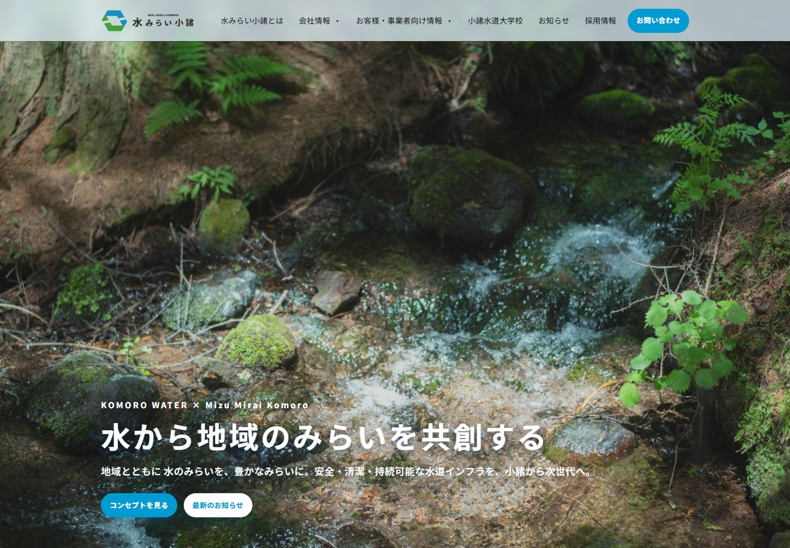
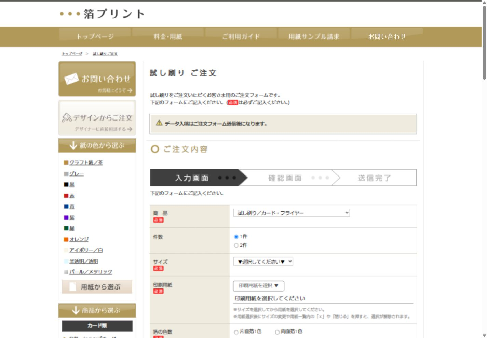
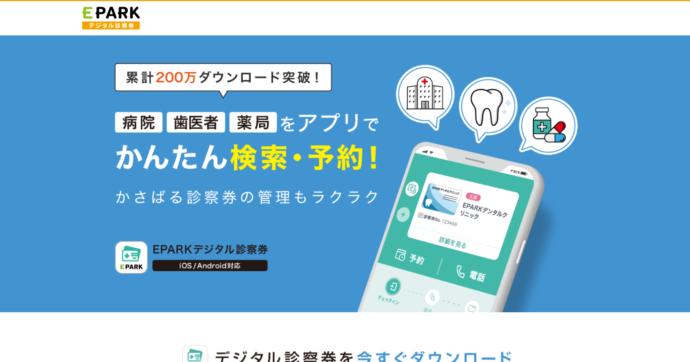
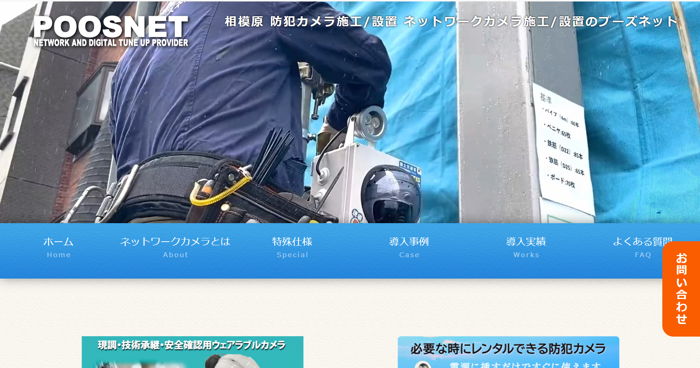
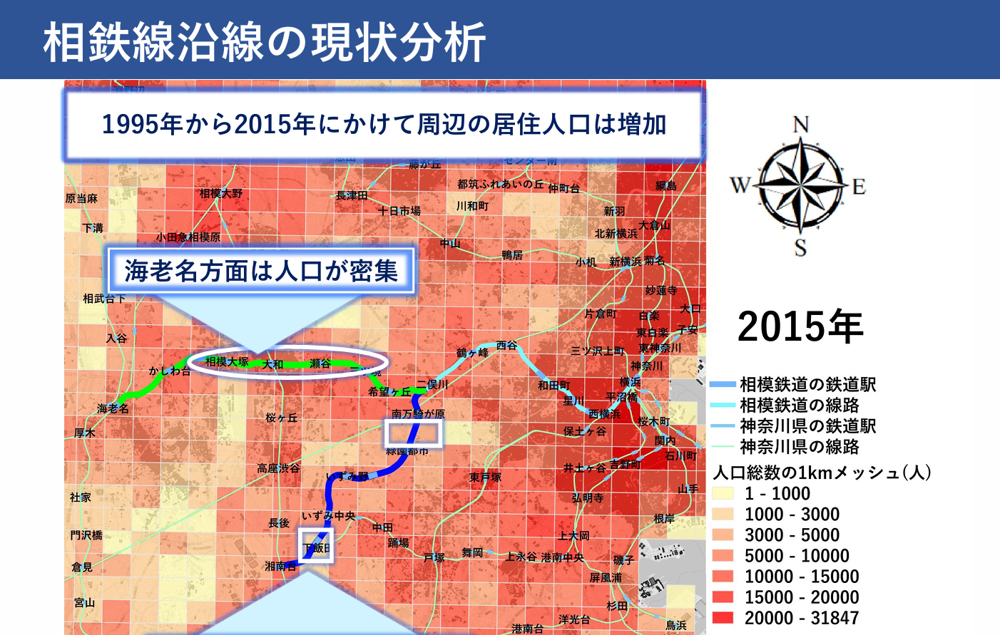
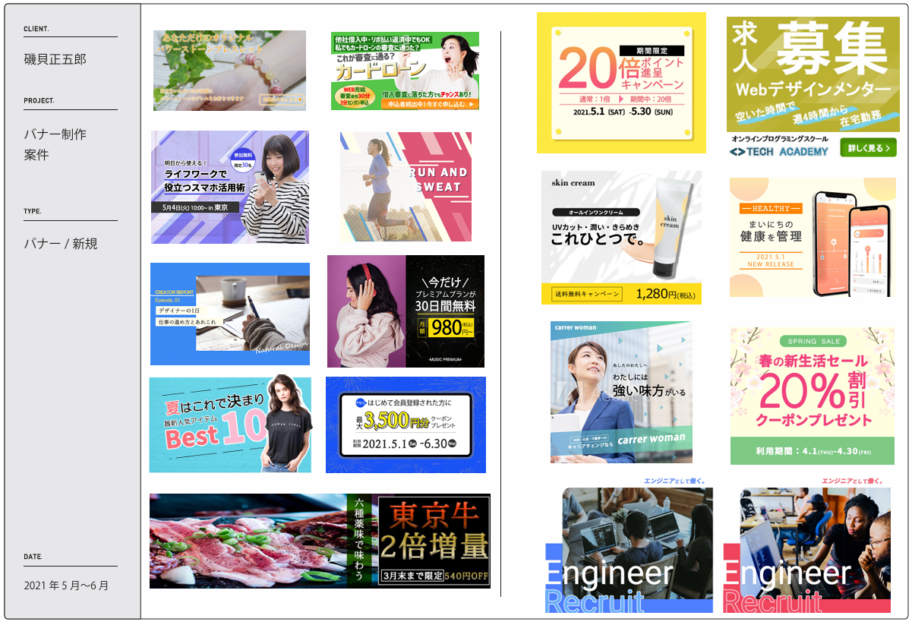

PORTFOLIO / 2026
ISOGAI MASAGORO
観察し、整え、
正確に届ける。
Engineering / Quality / GIS
品質管理で培った観察力と正確性、GISを用いた地図提案の経験を、現場の課題解決と業務改善に活かします。
About Me 自己紹介
はじめまして、磯貝 正五郎と申します。
システム開発の検査業務、医療系サービスの商品企画とWeb制作、ネットワークカメラの品質管理を経験。現在は出向先で鉄道関連の研究開発業務に従事し、車両の実験開発に加え、研究で使用する試験装置・計測装置の開発補助に携わっています。
これまでの現場で磨いてきたのは、「全体の流れと自分の役割を把握しながら、細部まで丁寧に仕上げる姿勢」です。
正確性が求められる業務で培った観察力と改善提案力を活かし、現場の課題を整理して、使いやすい仕組みや伝わりやすい情報に整えることを大切にしています。
学生時代には、GIS（地理情報システム）を用いた業務改善や、目的に合った地図の提案を経験しました。地形・上下水道などのコンピュータマッピングに取り組んだ経験も、エンジニアとしての課題解決に活かしていきたいと考えています。
-
正確性
仕様書作成からテスト工程まで、手順を遵守し、ミスを未然に防ぐ姿勢を培ってきました。
-
観察力
状況を客観的に捉え、改善点を見つけて提案する力。「自己観察力」を強みに業務改善に取り組んできました。
-
丁寧さ
資料作成、コーディング、デザインのいずれにおいても、最後まで気を抜かない仕上げを心がけています。
- Name
- 磯貝 正五郎（いそがい まさごろう）
- Based in
- 東京都八王子市（最寄駅: 京王相模原線 南大沢駅）
- Education
- 東京都市大学 都市環境学
Skills スキル
Railway Research & Development
鉄道研究・装置開発補助
- 鉄道関連の研究開発支援
- 研究で使用する試験装置の開発補助
- 研究で使用する計測装置の開発補助
- 車両の実験開発
GIS & Mapping / 学生時代
地理情報の活用・地図提案
- GIS（地理情報システム）地図を用いた業務改善
- 利用目的に合った地図の提案
- 地形・上下水道などのコンピュータマッピング
Web Development
コーディング
- HTML5 / CSS3（レスポンシブ対応）
- JavaScript（基礎）
- WordPress（運用・カスタマイズ）
- BEM設計 / セマンティックHTML
Design
デザインツール
- Adobe Photoshop
- Adobe Illustrator
- Adobe XD / Figma
- Adobe Premiere Pro
- LP / バナー / 画像編集
QA & Operations
品質管理・業務改善
- 仕様分析・設計・テスト工程
- PHP / MySQL（システム制御）
- Excel（MOS取得）／関数活用
- Power Automate による自動化
- C言語 / VBA（基礎）
Marketing
マーケティング
- Googleデジタルマーケティング
- LP企画・メルマガ制作
- 商品企画・デジタル診察券アプリ企画
- UI/UX改善提案
資格・認定
- Webクリエイター能力認定試験 エキスパート
- MOS Excel 2019
- Googleデジタルマーケティング公式認定
- 生成AIパスポート
- コミュニケーション検定
- 食品衛生責任者
- 安全衛生推進者
- 普通自動車第一種運転免許
学科試験合格・資格取得予定
- 第二種電気工事士 学科試験合格（資格取得予定）
Experience 経歴
-
Engineering & QA現在
品質管理・鉄道関連の研究開発
出向先での鉄道関連の研究開発
出向先にて鉄道関連の研究開発業務に従事。車両の実験開発に加え、鉄道関連の研究で使用する試験装置・計測装置の開発補助に携わり、研究・試験を支える装置づくりをサポートしています。
ネットワークカメラの品質管理・業務改善
ネットワークカメラの検査・設定・トラブルシューティングを担当。システム制御の開発に関わる中でPHP・MySQLにも触れ、Excel・Power Automateを活用したデータ入力や業務フローの改善にも取り組み、報告書作成や業務効率化を実現しました。
-
Web制作・商品開発
医療分野の業務改善ツールサービスにおいて、LP・HPのデザイン調整、HTML/CSSによるコーディング、レスポンシブ対応を担当。WordPressによるサイト運用やブログ記事の作成、Photoshop/Illustratorでのバナー制作・画像編集も実施し、デザインと実装、運用までを一貫して担当する経験を積みました。
-
保守運用・検査業務
大手自動車メーカー向けシステムの検査業務を担当。仕様書作成からテストまで幅広く対応し、正確性と手順遵守の姿勢を培いました。
-
東京都市大学 都市環境学
地図を活用した業務改善・提案
学生時代のGIS・コンピュータマッピング経験
GIS（地理情報システム）の地図を活用した業務改善や、利用目的に合った地図の提案を経験。地形・上下水道などのコンピュータマッピングに取り組み、地理情報をわかりやすく整理して伝える経験を積みました。
Portfolio 経験・実績
GISによる地図提案、業務改善、Web制作の経験と、公開中の制作実績をご紹介します。
-

Web / Corporate Site
水みらい小諸
コーポレートサイト地域の水道インフラを支える企業のコーポレートサイト。企業の理念や事業紹介に加え、市民・工事事業者・事業体に向けた案内、お知らせを掲載しています。
-

Web Development / Order Form
ドット箔プリント
試し刷り ご注文フォームカード・フライヤーの試し刷り注文フォームを制作。用紙選択のモーダルや仕様に応じた項目の切り替えなど、複雑な注文条件を入力できる仕組みを実装しました。
-

Web Design / Landing Page
デジタル診察券アプリ
ストアページとLP制作EPARKデジタル診察券アプリのストアページと、サービスを紹介するLPの制作実績です。アプリの特徴や通院時に役立つ機能を伝え、ダウンロードへつなぐページを制作しました。
-

Web Development / Site Update
株式会社プーズネット
ネットワークカメラサイト 修正・更新株式会社プーズネットのネットワークカメラサイトにおける、企業ホームページの修正・更新実績です。既存ページの情報追加、デザイン調整、表示の最適化に取り組みました。
-

GIS / Area Analysis
地理情報システムを用いた解析
相鉄線沿線の現状分析学生時代に取り組んだ、GIS（地理情報システム）を用いた相鉄線沿線の現状分析です。駅乗降者数、居住人口、事業所数を地図やグラフに整理し、地域ごとの特徴を比較しました。
-

Graphic Design / Banner
バナー制作物
目的に合わせたビジュアル制作キャンペーン、商品紹介、求人など、さまざまなテーマのバナー制作物です。写真・配色・文字の大きさを組み合わせ、限られたスペースの中で訴求内容を伝えるデザインをまとめています。
-

Graphic Design / Logo
ロゴ制作物
イタリアンカフェのロゴ提案「親しみやすいイタリアンカフェ」をコンセプトにした、caffè gufoのロゴ提案です。シンボルマーク、文字、配色の意図を整理し、モノクロ展開や使用イメージとともにまとめています。
-
Operations
業務フロー自動化
ExcelとPower Automateを連携させ、データ入力業務を自動化。手作業の削減と人的ミスの防止を実現。
-
Video Editing
映像編集
Premiere Proを用いた映像編集。視覚的な表現力と構成力を活かしたクリエイティブ制作。
-

Web Design / Portfolio
本ポートフォリオサイト
HTML/CSS（BEM設計）とVanilla JavaScriptで構築。品質管理・業務改善・GIS・Web制作の経験を紹介する、レスポンシブ対応のセルフプロジェクトです。
Contact お問い合わせ
ご質問・ご相談・お仕事のご依頼など、お気軽にお問い合わせください。
通常2〜3営業日以内に返信いたします。
- Email masagoro.isogai@gmail.com
- Based in 東京都八王子市